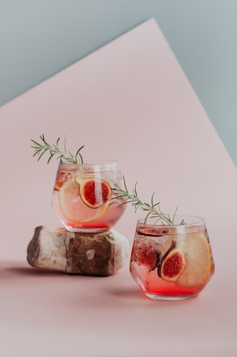

Pink tonic
PINK TONIC
- INGREDIENTES
- 50 ml de Ginegra
- 25 ml de jugo de pomelo natural
- 25 ml de jugo de naranja natural
- 1 dash de bitter de granadina
- 50 ml de tónica
- Opcional: Garnish de limón, romero y/o granada
- COMO ELABORAR UN PINK TONIC
- Paso 1. Llena un vaso con hielo
- Paso 2. Añade la ginebra, los jugos naturales y luego complementa con el bitter
- Paso 3. Cubrir suavemente el vaso con tónica
- Paso 4. Decorar a gusto
